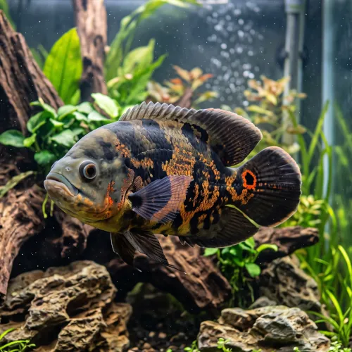

Nome popular principal
Oscar
Oscar, Apaiari, Ciclídeo-Oscar
Ficha de peixe
Ciclídeos
Um grande ciclídeo amazônico repleto de personalidade que interage ativamente com o aquarista.

Nome popular principal
Oscar, Apaiari, Ciclídeo-Oscar
Nome científico
Nome técnico essencial para taxonomia, cruzamento de manejo e referência editorial consistente.
Dificuldade de manejo
Use este nível como referência inicial, sempre considerando volume, estabilidade e compatibilidade do aquário.
Seção 1
Seção 2
Seções 4 a 6
Oscar tem hábito alimentar onívoro. Excelente. 1 a 2 vezes ao dia. Muito guloso, aceita rações específicas para grandes ciclídeos, peixes pequenos, insetos e pedaços de filé de peixe.
Dificilmente observável visualmente; a confirmação precisa ocorre apenas na época reprodutiva pela observação da papila genital. Tipo de reprodução: Ovíparo. Dificuldade de reprodução: Intermediário. O casal limpa uma pedra plana para a postura dos ovos e demonstra cuidados parentais intensos, protegendo a ninhada de qualquer ameaça.
Baixa. Substrato recomendado: Areia fina ou cascalho rolado grosso, pois gosta de cavar. Necessidade de esconderijos: Média. Desarraiga plantas naturais com facilidade ao cavar; prefere decoração baseada em rochas grandes e troncos bem fixados.
Seção 7
Atinge crescimento muito rápido no primeiro ano de vida e exige filtragem potente devido à grande quantidade de resíduos produzidos.
Seção 8
O volume mínimo recomendado é de 300 litros para um único indivíduo adulto, garantindo espaço e estabilidade na qualidade da água.
Sim, o Oscar é conhecido por sua inteligência e hábito de se aproximar do vidro ao notar a presença do dono no momento da alimentação.
Pode viver com outros ciclídeos de grande porte e cascudos, desde que o aquário seja amplo e todos os peixes tenham tamanhos similares.